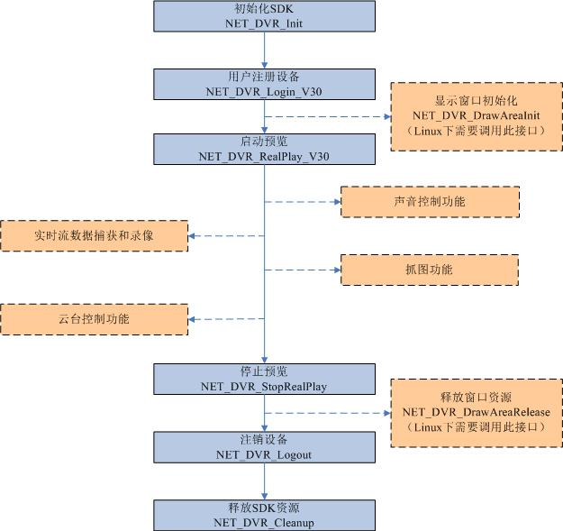

程序包com.hikvision.netsdk的说明
包括海康威视在各个平台下的netsdk封装
海康DVR netsdk 编程导引
1.预览模块流程
- 实时预览支持TCP、UDP、RTP、MULTICAST网络传输模式。
- 实时预览时，DS-80xx、DS-70xx、DS-71xx、DS-72xx、 DS-60xx、DS-61xx系列设备每个通道最多支持6路同时连接，
每台设备最多支持24路同时连接；
DS-81xx、DS-71xxHV、72xxHV等系列设备每个通道最多支持6路同时连接，每台设备最多支持18路同时连接；
DS-90xx混合型硬盘录像机每个通道最多支持6路同时连接，每台设备最多支持64路同时连接；
DS-91xx系列设备每个通道最多支持6路同时连接，每台设备最多支持64路同时连接；
IP设备每个通道最多支持6路同时连接；
DS-91xx-ST系列通道连接数没有限制，每台设备最多支持128路同时连接。
预览和与预览相关的模块流程图

图中虚线框部分的模块是与预览模块相关，必须在启动预览后才能调用，这些模块之间是并列的关系，各自完成相应的功能。
- 声音控制功能主要实现独占、共享声音的打开和关闭；音量的控制。相关接口有：
NET_DVR_OpenSound、NET_DVR_CloseSound、NET_DVR_OpenSoundShare、NET_DVR_CloseSoundShare、NET_DVR_Volume等。
- 实时流数据捕获和录像模块主要实现数据回调和本地录像的功能，可以供用户后续处理。相关接口有：
NET_DVR_SetRealDataCallBack、NET_DVR_SetStandardDataCallBack、NET_DVR_SaveRealData等。
- 抓图功能主要实现对当前解码图像的捕获，保存格式为BMP。相关接口有：NET_DVR_CapturePicture。
- 云台控制模块主要是在开启预览的前提下实现对云台控制的操作功能，包括云台预置点、巡航、轨迹和透明云台等。相关接口有：
NET_DVR_PTZControl、NET_DVR_PTZPreset、NET_DVR_PTZCruise、NET_DVR_PTZTrack、NET_DVR_TransPTZ。
实时流解码方式
- 方式一：在预览接口NET_DVR_RealPlay_V30中预览参数的播放窗口句柄赋成有效句柄，则由SDK实现解码功能。
在初始化SDK和注册设备两步骤后，直接调用启动预览和停止预览接口。
- 方式二：用户可以通过设置预览接口NET_DVR_RealPlay_V30中预览参数的播放窗口句柄为空值，
并通过调用捕获数据的接口（即设置NET_DVR_RealPlay_V30接口中的回调函数或调用NET_DVR_SetRealDataCallBack、NET_DVR_SetStandardDataCallBack接口），
获取码流数据进行后续解码播放处理。